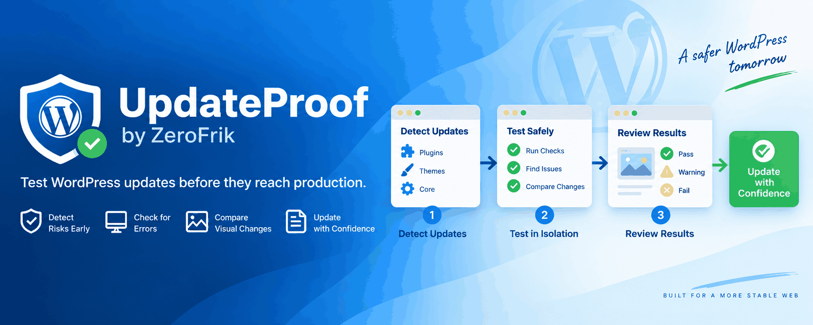

🛡️
Safe update testing
Test selected plugin and theme updates away from your production site.
UpdateProof tests plugin and theme updates in an isolated environment, checks for errors and visual changes, and gives you clear evidence before you touch the live site.

Core features
UpdateProof focuses on evidence you can understand: availability, errors, visual differences, and an easy Pass / Warning / Fail result.
Test selected plugin and theme updates away from your production site.
Compare important pages before and after an update to spot layout changes.
Check HTTP failures, JavaScript errors, and PHP/fatal errors where available.
Review understandable Pass, Warning, or Fail findings instead of a black-box score.
Schedule tests across client sites and reduce repetitive maintenance work.
Controlled deployment, smoke testing, deployment history, and rollback workflows.
How it works
Install UpdateProof and securely connect the WordPress site.
Select the plugin or theme update you want to validate.
Run the update in an isolated test environment.
See errors, screenshots, differences, and the risk result.
Update manually on Free, or continue into controlled deployment on Pro.
Free & Pro
For developers who want confidence before updating a site.
For agencies that want automated testing and safer deployment workflows.
| Feature | Free | Pro |
|---|---|---|
| Connected WordPress sites | 1 | Multiple |
| Site health monitoring | ✓ | ✓ |
| Plugin/theme update detection | ✓ | ✓ |
| Manual safety tests | ✓ | ✓ |
| Automated schedules | — | ✓ |
| HTTP/page checks | ✓ | ✓ |
| JavaScript error detection | ✓ | ✓ |
| PHP/fatal error detection | ✓ | ✓ |
| Visual regression | Limited | Full |
| Contact-form testing | — | ✓ |
| WooCommerce testing | — | ✓ |
| Risk report | Basic | Detailed + history |
| Human approval | ✓ | ✓ |
| Production deployment | — | ✓ |
| Smoke testing | — | ✓ |
| Automatic rollback | — | ✓ |
| Deployment history | Limited | Full |
| Team access | — | ✓ |
| Client reporting | — | ✓ |
| Support | Community | Priority |
Security by design
UpdateProof is designed around scoped credentials, signed requests, replay protection, restricted operations, and human approval for sensitive actions.
FAQ
No. The initial Free workflow is focused on testing and evidence. You review the result and decide what to do next.
No. The initial risk model is deterministic and evidence-based. Human review stays in the loop.
The Free plan is designed for manual safety tests including availability, basic browser/server error checks, and limited visual comparison.
Pro is intended to add automation, deeper synthetic testing, richer history, deployment workflows, rollback, teams, and reporting.
Final commercial limits and pricing are still being validated.
Start with UpdateProof Free to inspect WordPress updates safely before production.